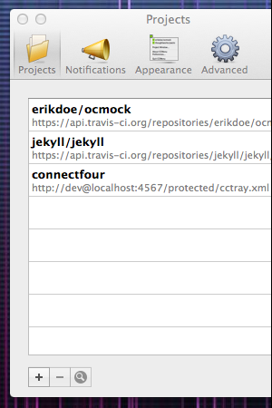

CCMenu displays the build status of projects on a continuous integration server as an item in the Mac's menu bar. Or in other words, CCMenu is to OS X what CCTray is to Windows.
CCMenu allows you to:
CCMenu works with CruiseControl, and with CircleCI, GreenhouseCI, Jenkins, Snap CI, TeamCity, ThoughtWorks Go, and Travis CI. It should also work with any continuous integration server that can provide status in the “cctray” XML format.
The summary icon in the menu bar and the icons for the individual projects in the menu convey information about the project status:
The most recent build was successful
 The most recent build failed
The most recent build failed
 The project is building, previous build was successful
The project is building, previous build was successful
 The project is building, previous build was broken
The project is building, previous build was broken
 The project is disabled or waiting for a build agent
The project is disabled or waiting for a build agent
The server or project status are unavailable
Clicking on a project in the menu opens the project's web page in the default web browser. Depending on the continuous integration server this can be a project overview page, or a page with details about the last build.
CCMenu sends notifications when a build has completed. Depending on the previous build status and the result of the current build, it will send one of the following notifications:
Older versions of CCMenu, for OS X Lion and earlier, use Growl to send notifications.
The project window shows more detailed information about each of the projects, including last build time and build label. Note that you can rearrange the columns and sort the view by clicking on the column. These setting and the window size and position are persisted accross sessions.
 To add a new project, click on the plus icon below the project list in the preferences panel. In the sheet that opens type the URL of the server into the text field or select an existing server from the drop down list.
You can enter just the hostname or parts of the URL and CCMenu will then try various common locations for the CCTray feed. If your server has a custom configuration you may have to enter the full URL for the feed.
If you are using Travis CI please enter a URL of this form:
https://api.travis-ci.org/repositories/{user}/{repo}/cc.xml
You can drag the projects in the list to arrange the order in which they are displayed. Alternatively you can choose to have the projects sorted alphabetically or by last build time. Note, that the preference to sort the projects only affects the menu, not the project list in preferences.
The preferences window is resizable when the project list is shown.
CCMenu registers two custom URL schemes. This makes it possible to create links on webpages that, when clicked, will open CCMenu and show a prefilled list of projects to add.
To create a CCMenu link, simply add "ccmenu+" to the beginning of the feed URL. For example, a link to the feed for CCMenu's own CI build would look like this:
ccmenu+https://api.travis-ci.org/repositories/erikdoe/ccmenu/cc.xml
It is not possible (yet) to create links that add a project directly.
CCMenu stores its configuration using the macOS defaults system, which can be accessed using the defaults command. It is possible to load an initial configuration with a command like the following. CCMenu should not be running when the command is issued.
defaults write net.sourceforge.cruisecontrol.CCMenu Projects '
(
{
projectName = connectfour;
serverUrl = "http://localhost:4567/cctray.xml";
}
)'With more command line processing it is obviously also possible to read the existing list, add a new project, and then write the updated list.
Last but not least, the open command can be used to trigger the addition of projects from the command line, e.g.
open ccmenu+http://localhost:4567/cctray.xml
As mentioned above, it is not (yet) possible to create links that silently add a single project.
CCMenu is available on the Mac App Store.
Old versions of CCMenu (CCMenu 1.8 and older) can be downloaded from the file archive on SourceForge, where the project was hosted until 2014. Newer versions and pre-releases are available on the Github releases page. These versions do not update automatically and you will not be notified when new versions become available. Unless you have a specific reason please install CCMenu from the App Store.
View the source on Github.
Send bug fixes and changes as pull requests on Github. You can also suggest enhancements.
Development: Erik Dörnenburg
Contributions: Luke Barrett, Marcus Müller, David Pattinson, Fabian Vogler
Read Martin Fowler's article on Continuous Integration.
Find out more at the ThoughtWorks Continuous Delivery insights channel.
Download
Source code
Credits
Background